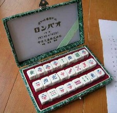
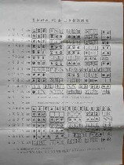
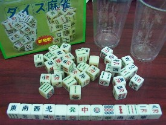
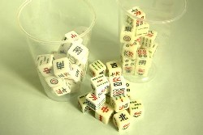
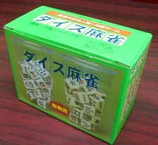
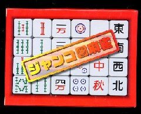
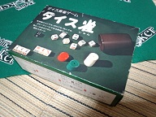
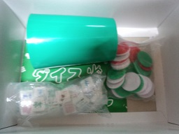
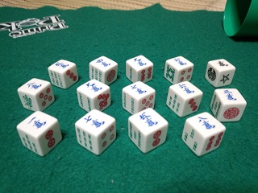
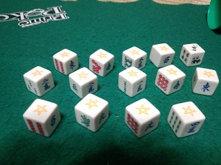

（３５）ダイス雀
|
１人か二人でも麻雀が楽しめるようにというので考案されたのが、サイコロ式のロンパオ（竜宝）。24個の６面体に、麻雀牌136枚が彫られている。
 
136枚を６面体に割り振るなら23個でよい。それでも２面余る。どうせ余るなら、24個にして８面余らせれば花牌が８枚、挿入できる。ということで、この８面に春夏秋冬の花牌を２枚づつ彫って ちょうど144面。
この24個を同時に振る。上を向いた面の中から自分が作りたい役に必要な面があるモノを残し、それ以外を集めてもう一度 振る。これを５回繰り返すうちに、アガリ役ができれば完成となる。１人〜３人用のゲームであるが、やはり１人ではどんな高い役ができたって、面白くなさそう....(>_<)
説明書に寄れば、このロンパオは原田茂安という人が考案し、昭和34年（'79）頃に実用新案をとったらしい（PAT．No.474551）。それを中外交易（株）という会社が販売した。惹句には「前・日本麻雀連盟副総裁、川崎備寛先生推奨の品」とあるが、たぶんあまり売れなかったのでは。
当時の販売価格がいくらであったか知らない。しかし存在も大して知られないうちに、新案保護期間も自然に切れたようだ（保護期間は、たしか特許が20年、実用新案は10年）。それでも息長く販売されていたようで、σ(-_-)は昭和54年頃（1980）に新品を数千円で購入した記憶。
さすがに今となっては絶版なので珍しいといえば珍しいが、ヤフオクでここ２，３年の間に数回 出品されているのを見かけた。しかし需要がないので、千円〜２千円ほどで落札されているようだ。現時点では、骨董品というより、「昭和30年〜40年代代に、こういう商品が販売されていた」というレベル。骨董品になるには、もう50年くらい必要かも。
そんなロンパオの10年くらいあとに発売されたのがダイス麻雀。ロンパオと同じ24個の６面体に、麻雀牌が彫られている。遊び方は、ロンパオと同工異曲。

考案したのは、高橋滋也という人。雀歴60年で東京の・・・・にお住まいとか。そして人数がそろわないときでも なんとか麻雀を楽しめるように、試行錯誤の末ダイス麻雀を考案したという。つまりダイス麻雀はロンパオとはまったく関係なく考案されたものらしい。
同じ６面体の24個セットでも、ロンパオは小振り（１辺、１センチほど）なので片手で持てる。しかしダイス麻雀は二回りほど大振り。片手で持つとこぼれ落ちる。そこで振りサイ用に、透明のアクリルかプラスチック製のコップがついている。
ロンパオは24個の１セット売りであるが、ダイス麻雀は最初からプレーヤー二人を想定して同じものが２セットの売り。混じり合って分からなくなるのを防ぐため、ＡセットとＢセットは、白色と象牙色に分けてある。

24個の６面体なので ８面余るのはロンパオと同じ。しかし余り面の処理や牌の彫り方がロンパオとは多少異なっている。たとえばダイス麻雀は、余った８面を花牌（春夏秋冬）４枚で。残った４面を特定の数牌を１枚増やすことで埋めている。つまり や や など４種類の数牌が５枚ある。先般、麻雀祭都のbbsで、「５枚めの牌は存在しないので....ん」という話がでた。ここにはリッパに存在するのだ。(^-^； など４種類の数牌が５枚ある。先般、麻雀祭都のbbsで、「５枚めの牌は存在しないので....ん」という話がでた。ここにはリッパに存在するのだ。(^-^；
またロンパオは、６面体の仕様が基本的にワンパターンなのに対して、ダイス麻雀は一つ一つ異なる。
＊ロンパオは の反対面はすべて の反対面はすべて 、 、 の反対面はすべて の反対面はすべて という具合になっている（字牌は七種の関係で、少しパターンが異なっている）。しかしダイス麻雀組み合わせがすべて異なっている。もっとも これがゲームの多様性にどれだけ関係しているかは分からない。 という具合になっている（字牌は七種の関係で、少しパターンが異なっている）。しかしダイス麻雀組み合わせがすべて異なっている。もっとも これがゲームの多様性にどれだけ関係しているかは分からない。
ダイス麻雀の販売価格は6,800円。商品パンフをみたとき、（うわぁ、高いな....）と思ったが、σ(-_-)はマニアなので２セット買った。(-_-； 24個が２セットに コップが２つ付いてくるので、商品箱の体積はかなり大きい。

大振りなので片手で持てない→コップが必要、ということで加えられたんだろうが、体積をとるうえにコストが高くなるだけ。無ければ無いで、みんな何とかする。そこで購入したときの感想は、（この価格では、ロンパオよりさらに売れないだろう....）。
それから数年経って、ナガセカラーという会社から、ジャンコロという商品が販売されるようになった。

（ふ〜ん、また同様の商品が発売されたのか....）と思っていたら、これはダイス麻雀のリニューアル商品だった（コップがついていないだけで、中身はまったく同じ）。希望小売価格はダイス雀と同じ（\6,800-）であるが、ヤフーなどの実売価格は\1500-前後。このレベルのゲームなら、まぁ順当な価格帯。最初からこうすれば子供玩具の対象にもなって、もっと売れたかもしれないと思った。
|
あさみ ”13.12.04.（水)
先般、見知らぬ方からメールをいただいた。読むと上記で紹介したダイス雀を考案した高橋滋也さんの遺族の方であった。メールによれば高橋さんは数年前に亡くなられたとのこと。高橋さんは麻雀が大好きで、一人でも遊べるようにとダイス雀を考案したとのこと。また作家の阿佐田哲也さんとは、小学校時代の同級生であったそうだ。
最近 遺品を整理していたところ、10セットほど保管してあるのを発見した。しかし遺族はまったく麻雀をしない。ネットで検索してみたところ、ダイス雀が貴サイトで紹介されているのを見つけた。そこで
よろしければ無償で贈呈します とのことであった。せっかくなので、喜んで頒けていただいた。
どのように使ってもらってもいいとのことであるが、急な話なので いまのところ具体的な案はない。しかし例会の記念品とかゲーム用品のコレクターに提供するなど考えているところ。
|
ダイス雀のコラムを見た読者の7743MAさんより、違うタイプのダイス雀の情報をいただいたので紹介したい（もっと早く紹介しるつもりだったが、愛用PCがクラッシュしたあと、新しいOSのもとで写真などを処理する方法が判らなかった（>_<）
先般、ようやく教えてもらったので、なんとか出来るようになった。
7743MAです。下記がコラムに収録されているものと異なるダイス雀です。
遊び方は、下記のようです。
☆の目はなんにでも使えるワイルド出目、ただし☆のみで面子を構成することは出来ない。ただし例外として、オール☆なら役満となる。
風牌は二ずつ、三元は一づつしかないため、必然的に☆の使用が必須となる。
黒い文字のダイスは、出目が萬／筒／索／風／三元／☆になっており、手牌には使わない。
ルールはこんな感じ
(1)手牌ダイス13個と黒ダイス１個を振る
※この時点で四面子一雀頭が出来れば天和(黒ダイスは和了牌以外には使えない)。もしテンパイである場合は(3)へ。
(2)テンパイしなければ、黒ダイスを一旦とりのぞき、好きなダイスをいくつでも振り直せる。ただし振り直しは2回まで。それでテンパイしなければ流れとなる。
(3)テンパイした場合はリーチ宣言をした後、黒ダイスを振る。
黒ダイスで和了牌を引けばツモアガリとなる。
対戦相手がいる場合、ツモアガリに失敗すると対戦相手が順番に黒ダイスを振る。
対戦相手がアガリ牌を出した場合は、出した人の振り込み扱いとなる。
※黒ダイスの出目は[☆]は全て、萬筒索は対応した数牌に対応する。
(4)点数計算は、1000点に(1x翻^2)を掛けた分という略式で行なう。
一投目でテンパイなら四翻、二投目なら二翻、三投目なら一翻 追加となる。
採用役は削られてますが省略。
 


|